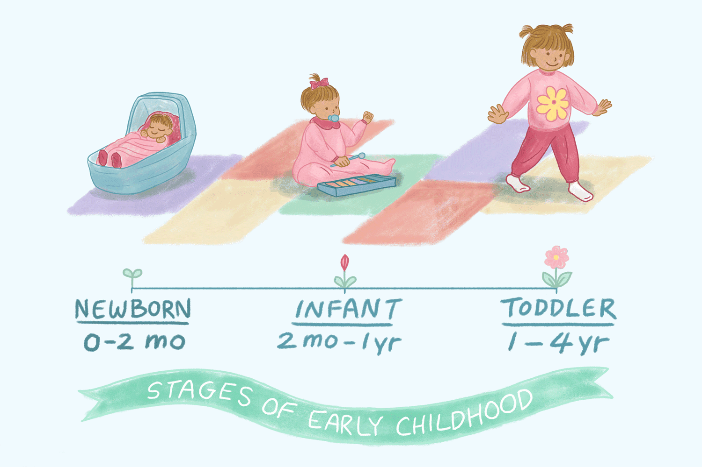

Infant Nutrition
Breastfeeding
Breastfeeding is recommended for the first six months for optimal health.
Introducing Solids
Solid foods can typically be introduced around six months of age.
Welcome to my guide on nurturing your baby from birth to four years old! This remarkable journey is packed with exciting developmental milestones, where your little one will rapidly evolve in their physical abilities, emotional understanding, and cognitive skills. As well as forming deep bonds with you as their primary caregiver. By actively engaging with your baby through play, communication, and responsive care, you can create a positive environment that fosters their curiosity, learning, and well-being. This guide will walk you through key stages, offering practical strategies to support your baby's unique development, from learning to crawl and reaching to navigating complex emotions and beginning to explore language.
| 0-12 Months | 1-2 Years | 3-4 Years |
|---|---|---|
| During the first year, babies undergo significant physical and cognitive growth. They will learn to crawl and eventually walk, marking important milestones in their physical development. Simultaneously, infants begin to recognize faces and respond to their names, showcasing their cognitive abilities and growing awareness of their environment. | Children will start using their first words and form simple sentences.Toddlers will learn to play with others and share toys. | Children engage in role-playing games and creative storytelling.At this age, kids will learn basic counting and recognize shapes and colors. |
Breastfeeding is recommended for the first six months for optimal health.
Solid foods can typically be introduced around six months of age.
A balanced diet includes fruits, vegetables, grains, and proteins.
Newborns sleep a lot but wake frequently for feeding.
Creating a calming sleep environment is crucial for infants.
A consistent bedtime routine helps toddlers wind down.
Toddlers typically need 11-14 hours of sleep in a 24-hour period.
Holding and cuddling your baby promotes bonding.
Talking and reading to your baby encourages language development.